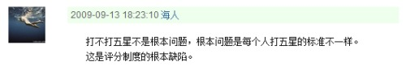

和：也给你一照
恩，比如你现在还记得sina那些用过的blog页面么？
当然我也不知道把记忆外化是不是件合适的事情，但这哲学意味太浓作为指标太虚，，所以mnote还是要做的
而且：原谅我每天发这么多有的没的吧
忽然想，人随时都会不在，，等真的发生了的时候，你却回忆起什么都没做，该有多难受，，
可是该怎么做
真想做点什么
也回想起很久没有痛痛快快地哭过一次——我不是说爷们儿啊，，哭是表象，内部是穿通魂魄的感动，，恩，感动
PS：真要拿“痛痛快快”这么形容词标准的话其实是从来没有过的，那么我想说的应该不是以上的动作，，我想说什么呢？
这个是昨晚11点+的：
于外界的各种灰但不能收了触角竖起贝壳——那是故做姿态呢，这种的自尊毫不能保留
http://blog.sina.com.cn/s/blog_5492a22301009ue7.html
神了，狼王看评论，一瞬间我还以为谁谁附体了呢
PS：我知道现在的blog越来越凌乱，，其实呢，想法是把这当做mnote来用，虽无m的形态，但尽量贴近m的内容
没很价值，只是记录下：
mnote的核心应该是整合，呈现一个人在网络上完整的avatar——(论坛、SNS、blog，以及自己设想的名称们：presentation、diary、clipping、碎片。。。)
“对不起，您拨打的用户已设置呼入限制
Sorry, the subscriber you dialed has set barring of incoming calls.”
致twii .
下午课一半上完时，整个状态感觉是很虚弱——德鲁伊说话“I'm weak, I'm weak”~~
跟人走的感觉很不美妙。。。i really still need to into myself
pm7:31
make it more clear: 之前说大学以后对独处的需求似乎不那么强烈了——现在发现错了，，在宿舍里时虽然形式上不是独处，但实质上仍是的，，，在那毷氉的"课堂"上，哪怕一个人，但仍感觉被周遭的手包围，，急需出，急需孤独
"Solve the problem you actually have, not the one you imagine."
"解决你真正的问题，而非那些你想象出来的" 《Learning OpenCV》
感觉好像有点儿意味，但不大说的出来是啥，，可能是没经验
以下只算摘抄：
"Instead of reinventing the basic functions from scratch, a new student could begin by building on top of what came before."
——整个人类文明都是靠这背后的哲学维系的，，fantasy方面，参见刘慈欣《赡养上帝》
http://www.56.com/u79/v_NjYzMjQ1MjQ.html
2peng给的娱乐片
http://movie.douban.com/review/2151076/
沉默的羔羊的一篇影评，开眼界了
http://movie.douban.com/photos/photo/1165220205/
douban啊。。。。我受不了你了
《出租车司机》，，看不懂啊
只能说罗伯特那时候好青，朱迪福斯特好嫩
这句是一下把我有点儿震住，，结果看完内容说的好像不是那么回事儿，而且，这句引用还改了俩字，原文是：“女人是为了被爱而存在，并非为了被理解而存在。”
所以这其实是仍未解答我的任何困惑，，但是多看看书吧或这类吧——当然我也知道只在纸上根本不能解决问题，必须实作，，真麻烦啊，要玩起在这个现世中
加一句：连岳这家伙有读者青年文摘的外表，但大约是有高于——哎呦，不这么说，说深于吧，，或者说更靠谱的内容的
最近越来越觉得，“有趣”是比智慧啦、美丽啦、人格啦之类更高数量级的品质，，而且太难企及，因为对个人来说有趣要求很低，但在两个人的关系中，有趣是一种完全主观的体验，，人呵，暂时我只能说这么个词儿：“哎呦喂”
“将就并不能解决人生的孤单，也不能让人笨起来。所以，我建议聪明与有趣的人，继续聪明，继续有趣。”
我就当这句自恋，你们也别说我
http://www.17k.com/chapter/170288/4211948.html
这篇NB
写书其实是学识要求最高的工作呃，，我是说写那种真的好的不是哗众取宠的书，
经济、资本论、共产主义？都是可以了解的东西
想把3(not ss，而是ss3 嘎嘎)写漂亮了，物理也是可以想见的
这真是浩大。。。。所以我目前还是只留惦记吧
恩。。你知道么，《twister》看到那对twins时，我是真的心里默念“beautiful”，，，，，天，你们也能感受到多好
恩。。。工作了有钱了之后我一定买大刘的书，用douban的话讲，“把这家伙养得白白胖胖的”

“不要奢望让别人对你的世界感兴趣 你也不该让别人对你的世界感兴趣 两个人 是两个人的世界 而非各自世界的和”
这是mnote功能中的一个构想
《李献计历险记》，，哭得稀里哗啦的
美，，
也许叫做作，，不过没准能有积极影响？蛋疼的是qq音乐不全，还不能自己上传，，也许只这么浅尝辄止下
衣食不饱的时候不会操闲心精神生活去，，
忽想就像自己前几年，现在暖了安定了，思淫欲了
这个本来想找个微博发了的，，狼王速度开领地去
在想这以后还要更完善自己，所谓向“更进步的形态”(这里没要把“进步”当做高级的代名词)
能。。。。更、透、彻、地、表、达、自、己
现在么，一方面是表达能力有限，另一方面如果对一件事情本身就看不清楚的时候，也没可能表达了对么？
所有(我所看过的)科幻推荐:
长篇：
(安德系列都还不错，这两本比较突出)
(同作者的另一本《人变火星人》也不错，但比起这个是俩级别的)
(费诺文奇的这两部已然不必多说了，注意后面还提到短篇《真名实姓》)
(大刘不能没有，三体是中国科幻的骄傲)
(大刘)
(阿西莫夫确实也不能没有)
儒勒凡尔纳的：(我想说他确实不错，但现在这个年龄段作为科幻入门实在太老了)
地心游记
从地球到月球
八十天环游地球
(以及 壮丽的奥里诺科河、机器岛、 十五岁的船长、格兰特船长的儿女)
短篇：
刘慈欣：吞食者、诗云、朝闻道、赡养上帝、地火
王晋康：临界、生存实验
柳文扬：一日囚
何夕：伤心者
韩松：地铁惊变
燕垒生：瘟疫
费诺文奇：真名实姓
史蒂芬·巴克斯特：猎户座防线
还要说么？这算是已经有了结果的一个。。。事？历程？
那么，，真实地面对自己，开始新的生活吧
和，祝福，，至少彼此是生命中曾经的一部分
昨晚的烟花是跟妈一起看的，zhou着个手机拍到磁盘空间满，，
想到个科幻设定：记得天渊里那种胸前挂的软宝石么，捏一下可以播放出一段视频，，就想如果把这个作为礼物送出去还算挺好的，
现实里么，好像没啥合适的，，那罢了就不纠结了吧
看狼王的blog，，想到他送流年回家，——继而就忍不住地想到送她回家，如果有这机会的话。。。还YY，“能再牵起一次手么？”。。。。
这篇可能是个错误，whatever.............
又见小科幻，，但电影本身还行
真心、多么希望能拍出一8.0+的片，，但我知道，不抱希望的。。。。
1.电话号码
丢手机就丢了所有的号码；应该有一个可供上传下载这些号码的个人账户云云
这不是啥新点子，但MS现在确实没人做，，另外参见tech2、36氪上之类所谓“精准定位”，一个纯以此为功能的网站也可能可以成功——所谓有需求就有市场神马的
2.红绿灯
在城市所有的路口装上车流量监控，配合一个调度系统，动态分配各个路口红绿灯时间，，大约些许有助于缓解交通压力
最残酷的一幕

哎呀，这话说得太好了，，所以。。。评分这东西究竟该放在何种地位？
(http://movie.douban.com/subject/3006772/discussion/18951160/)
(PS: D9)
《Wall E》，，又看一遍，觉得如果是悲剧结局的话我可能冲动下就给5星了
一个问题：如果现在你可以得知自己的未来，你想不想知道？(知道以后你不能改变事件走向)
有时候对他人的愤怒源自对自己的不满意
(早以前写过不喜欢“有时候”这词儿，但中性点，这词儿有时候确是形容事实的；只是这个时代被滥用了，读者啊、大众啊云云)
例子是回家来这么些天一直有种小冲动跟爸妈吼“在家真是学不成东西”——客观借口各种年的事啊小例子我这码个代码我爸老客厅喊让看武林风云云
但最终没吼出来，，因为这确实是借口，即使客观原因有影响最主要的无能处还是自己——显得特别应这句话“对他人的愤怒源自对自己的不满意”
(另一方面理性多了也有代价，如今是无法回16、7岁那种荷尔蒙恋爱了，，那种感觉还是不错的怎么怎么说)
昨儿看了《失恋33天》，还不错。3星，本犹豫要不要打4星的但掂量下别的自己打4星的片子还是算了。就说这个3星，也是在“中国电影”里的3星，《让子弹飞》的3星是跟FC、TDK那些电影比较之下的3星，，不是一个衡量标准。
douban里的一些评论还是挺有趣的，比如“姑娘，那是你男人，不是你爹妈”。。。
狼王很多天没上，我这小人心态度之大约以为是最近次聊得不愉快，，——联系刚看的这电影，想到个词：经营。人们说爱情需要经营，(呃，好听点叫维护？)，，当然，我希望有个不必经营完全敞开了不顾忌的朋友是非常舒服的，概念上看像奢望，但咱这现实情况似乎很能达到呃，
词不达意，，之前脑子里浮想的结构没得表达出来——也可能就没摹想出适写的片儿
break了，去我奶家
《失恋33天》，不错
也许我们用来做模拟的物理定律们并非做模拟的最佳实现方式——假设现在做一个抛体运动的模拟，就拿我们从现实世界里抽象出的“速度”这一概念来说吧，我们给这个物体几个参数：质量、速度、加速度，抛出去了，，看上去不太真实呃，哦，原来少了空气阻力，这家伙该怎么模拟呢？相对物体运动速度方向的一个反加速度？不够真实呃，，真实的空气阻力是分子运动碰撞产生的统计效应——ZNM，几亿几千万的分子，每一个都质量速度加速度，。。。恩，这不是串行的PC机handle得了的
我是想也许定律、法则这些东西是描述事物的有力武器但不是模拟事物的好工具，，——描述中它们可以起到简化的作用，但模拟中它们只会起复杂化的作用。
比如我们谈到进化论、生态，种群繁殖S型曲线、基因漂变各种百分比浮点数，这些很有用，，但试问自然——它并不了解也丝毫不关心这些什么天才智力开发出来的定律、理论，它只执行很简单的动作，食物啊、竞争啊、淘汰啊，定律、形态是这些活动中突显出来的，或说是人的心智赋予的，，
就好像我们从CPU的视角去看一个系统的运行，它只是盲目地不知疲乏地拿来数据、加加减减移位、放回数据，但我们的视角看到的就已经是音乐、电影、炫目的3D游戏
应该说完了吧？那break，吃饭去
(结论该是自然而然的，当然成熟正确与否另说)